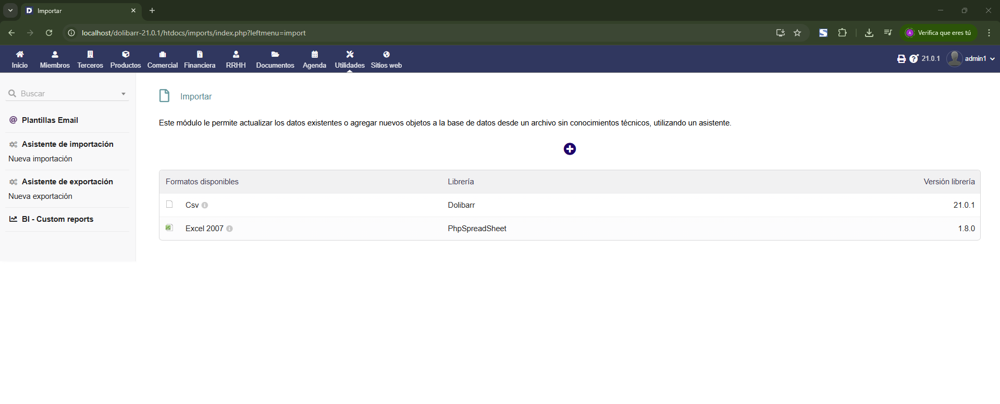

Importación de Datos
Se pueden importar datos en Dolibarr desde archivos CSV o Excel, como productos, clientes, facturas o proveedores... Solo hay que seleccionar el tipo de datos, subir el archivo y confirmar.

Paso 1
Paso 2
Paso 3
Paso 4
Paso 5
Elaboracion de informes
Se pueden hacer informes en Dolibarr desde los módulos de terceros, productos, facturación... Permite generar informes personalizados, exportarlos en formatos como PDF o CSV
Exportación de Datos
Se pueden exportar datos desde utilidades, eligiendo el tipo de datos (clientes, productos...). Se genera un archivo CSV o Excel.